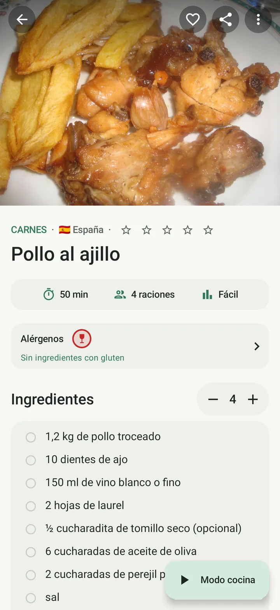
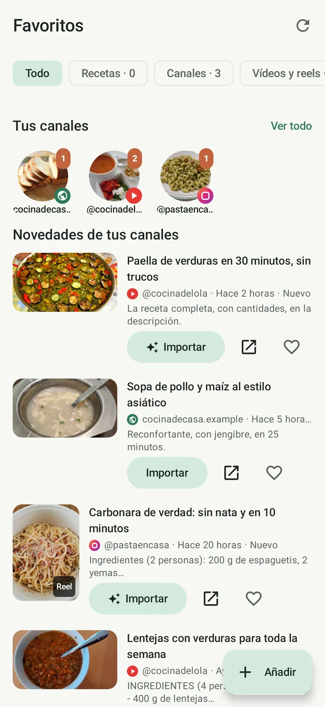
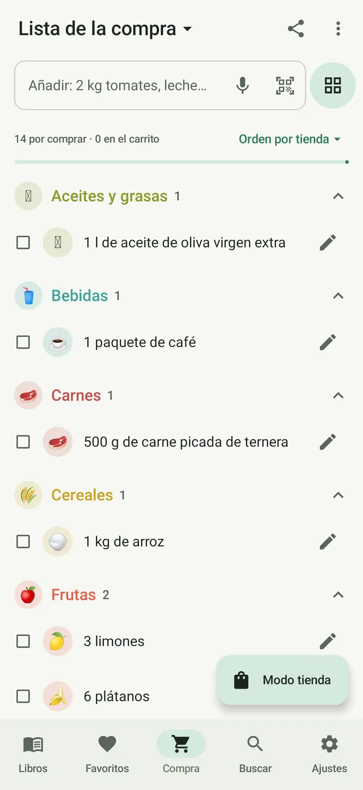
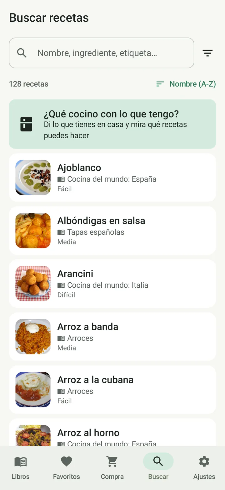

Tus recetas. Tus libros. Tu cocina.
Miga guarda las recetas de tu familia en libros con su portada, te acompaña paso a paso mientras cocinas, te avisa de los alérgenos que te importan y organiza la compra por los pasillos de tu supermercado. Sin cuentas, sin anuncios y con todo guardado en tu móvil.
Viernes 27 de noviembre · 14:00 (hora de España) · gratis
¡Ya disponible en Google Play!



Favoritos: tus canales y webs de recetas
Sigue canales de YouTube, perfiles de Instagram y webs de cocina, y mira sus últimas recetas en Miga. Guarda las que te gusten e impórtalas con un toque.
Ver más →Hecha para tu cocina, no para vender tus datos
Miga no tiene servidores propios ni te pide registrarte. Lo que guardas es tuyo y se queda en tu teléfono.
Todo en tu móvil
Recetas, fotos, listas y ajustes se guardan en el teléfono. Funciona sin conexión.
Sin cuentas ni anuncios
Ni registro, ni publicidad, ni analítica. Abres la app y empiezas a cocinar.
Tú decides qué sale
Internet solo se usa para lo que activas: tu asistente, Open Food Facts, packs o tu servidor.
Para toda la familia
Comparte libros y la lista de la compra con tu propio servidor, sin nadie en medio.
Explora Miga
Elige una parte de la app para verla tal cual es: estas pantallas son de la app de verdad.
Un recetario para cada cosa
Crea un libro para cada persona o cada tema, cada uno con su portada, y llena sus páginas con recetas completas.
- Recetas completas: ingredientes con cantidad y unidad, pasos, fotos, dificultad, tiempos, raciones, origen con bandera y etiquetas.
- Subrecetas: separa la salsa, la masa o la guarnición, cada una con sus ingredientes y sus pasos.
- Ingredientes opcionales: marca el perejil para decorar sin ensuciar su nombre.
- Packs de recetas: libros listos para instalar, con cocinas del mundo, arroces, panadería, Thermomix y más.
- Consejo del día: un truco de cocina cada día y cientos más que funcionan sin conexión.
Todo claro de un vistazo
Tiempo, raciones y dificultad en una línea; los ingredientes, escritos como los dirías.
- Ingredientes naturales: «½ vaso de vino», «2 dientes de ajo»: sin tablas ni columnas.
- Raciones al momento: cambia las raciones y las cantidades se recalculan solas.
- Alérgenos calculados: los 14 de la ley europea y la lactosa, a partir de los ingredientes.
- Consejos para esta receta: si un truco ayuda con sus ingredientes o pasos, aparece ahí mismo.
- Mis notas: apuntes con fecha que no cambian la receta: «la próxima vez, menos sal».
Cocina con las manos en la masa
Los pasos uno a uno, en grande y sin que se apague la pantalla.
- Temporizadores de un toque: «cocer 10 minutos» se convierte en un temporizador; puedes tener varios y siguen aunque salgas.
- Lectura en voz alta: Miga te lee cada paso con la voz que elijas.
- Manos libres: di «siguiente», «anterior», «repite» o «temporizador» sin tocar el móvil.
- Formato claro: tiempos y temperaturas resaltados para encontrarlos de un vistazo.

La compra, en el orden de tu súper
Añade lo que falta escribiendo, dictando, escaneando o desde una receta, y recórrela por pasillos.
- Por pasillos: escribe «limones» o «leche» como siempre y cada cosa va a su pasillo.
- Varias listas y plantillas: la de casa, la de la fiesta y la compra semanal guardada.
- Modo tienda: desliza para marcar y la pantalla se queda encendida.
- Compartir: por texto, con un código QR o sincronizada con tu familia.
- Ficha del producto: escanea el código de barras y mira Nutri-Score, NOVA, alérgenos y aditivos (Open Food Facts).

Cocina para quien tienes en la mesa
Miga calcula los alérgenos de cada receta y te ayuda con la celiaquía y con las raciones de hidratos. Todo opcional y sin el asistente.
- Solo los tuyos: marca tus alergias e intolerancias y cada receta dice «Lleva huevo» o «Sin tus alérgenos».
- Filtros: busca «Sin huevo», «Sin ingredientes con gluten» o recetas para celíacos.
- Modo celíacos: qué comprar certificado y cómo evitar la contaminación cruzada.
- Raciones de hidratos: cuántas lleva cada receta por persona y cuánto servirte según tu plan.

Una ayuda cuando la quieras
Funciones opcionales con inteligencia artificial y tu propia clave. Si no lo configuras, no se envía nada.
- Recetas desde fotos: fotografía una receta de un libro o escrita a mano y precarga el editor.
- Desde una web, Instagram o YouTube: pega un enlace o comparte un vídeo y obtén la receta limpia, sin anuncios ni historias.
- Mejorar recetas: pule la redacción y normaliza ingredientes; ves el antes y el después.
- Ideas: pregunta qué cocinar con lo que tienes, pide un menú semanal o un plato de temporada.

Compartid libros y listas en familia
Conecta Miga a un servidor que alojes tú y comparte libros y la lista de la compra entre varios móviles.
- Tu servidor: miga-server funciona en tu casa o en tu VPS con Docker.
- Invitaciones con QR: escanea el código desde otro móvil y ya estáis conectados.
- Lista compartida en directo: se actualiza cada pocos segundos mientras la miras.
- Sin terceros: los datos van solo a tu servidor.

Descubre Miga
Cada parte de la app en su página, con capturas reales.
Funciones
Libros, modo cocina, la compra por pasillos, el escáner, copias y todo lo demás.
Ver más →Favoritos
Tus canales de YouTube, perfiles de Instagram y webs de recetas, con lo último que han publicado.
Ver más →
Salud
Tus alérgenos, el modo celíacos y las raciones de hidratos.
Ver más →
Asistente de cocina
Recetas desde fotos, webs, Instagram y YouTube, ideas y mejoras, con tu clave.
Ver más →Familia y sincronización
Libros y lista de la compra compartidos con tu propio servidor.
Ver más →Packs de recetas
Libros de recetas listos para instalar con un toque.
Ver más →
Preguntas frecuentes
Precio, privacidad, alergias, iPhone… lo que más nos preguntan.
Ver más →Empieza tu recetario hoy
Llega a Google Play este viernes a las 14:00, gratis para todo el mundo. Crea tu primer libro y guarda esa receta que siempre te piden.
Viernes 27 de noviembre · 14:00 (hora de España) · gratis
¡Ya disponible en Google Play!